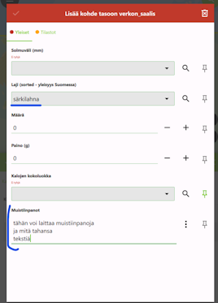
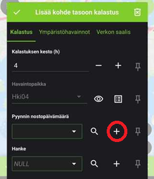
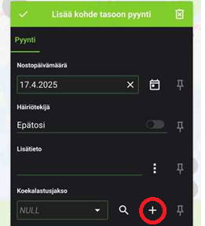

Ennakkovalmistelut
- Asenna itsellesi tietokoneelle QGISin viimeisin vakaa versio (LTR).
- Asenna mobiililaitteellesi QField-sovellus sovelluskaupastasi.
Lataa GeoPackage-tiedosto, joka sisältää projektitiedoston:
-
QGIS-projekti (viimeisin versio)
Päivitys 12.8.2025. Muutokset
-
Mahdollisuus syöttää yli 100 yksilön lukumääriä verkon_saalis tauluun. Maksimiarvoksi asetettu 9999.
-
Yläpalkin värikoodit verkon saalista syötettäessä seuraavanlaiseksi: punainen, kun
joku tiedoista solmuväli, laji, määrä ja paino puuttuu, oranssi, kune m. tiedot on
syötetty, ja vihreä, kun laskettu määrä ja syötettyjen pituuksien määrä täsmäävät.
-
Kun pituusjakaumia tallennettaessa laskettujen lukumäärä saavutetaan hyppäys otettu pois
-
Kokoluokat muutettu seuraavasti: 1-7 cm, 8-35 cm, 36-80 cm ja 81-150 cm.
-
Kaikilla lajeilla oletus kokoluokka 8-35 cm.
-
Ympäristöhavaintojen kellonaika muutettu vastaamaan Suomen aikavyöhykettä
-
Sekunnit otettu pois ajansyötöstä ympäristöhavainnoille
-
Päivitys 13.6.2025. Muutokset
-
Taustakartat ladattu nyt offline-tilaan. Tällöin taustakartat latautuvat myös ilman internet-yhteyttä.
-
Kalastuksen keston maksimiarvo muutettu 12 tunnista 999h tuntiin.
-
Pituusjakaumien syötön kaikkien arvojen (1-150cm) oletukseksi asetettu 0.
Päivitys 26.5.2025. Muutokset:
-
Lisätty loput havaintoalueet ja niiden paikat (Github Issue 24).
-
Lisätty mahdollisuus lisätä Ympäristöhavaintojen lämpötiloihin desimaalilukuja. Vaihdettu +-painikkeen askeleeksi 0.1
-
Muutettu taustakarta ei valittavissa -muotoon, niin taustakarttan tiedot eivät vahingossa aukea, kun yrittää valita havaintopaikkaa.
-
Verkon saaliin painon oletukseksi asetettu 0.
-
Lisätty särkikalaristeymä "särkilahna" havaintolistaan (Issue 12).
-
Lisätty muistiinpanot verkon_saalis tauluun:

Päivitys 25.4.2025 Muutokset:
-
Traficomin Syvyyskartta-lisätty taustakartaksi.
-
Verkon saaliin oletuskappalemääräksi asetettu 0.
-
Syvyystiedot lisätty havaintopaikan yhteyteen. Oikea syvyystieto tulee automaattisesti tämän listaksen mukaan: https://github.com/GispoCoding/luke-koekalastus/issues/16. Syvyystietoa voi tarvittaessa vaihtaa alasvetovalikon avulla.
-
Mahdollista lisätä "pyynti" suoraan havaintopaikan tiedoista:

-
Mahdollista lisätä "koekalastusjakso" suoraan "pyynti"-tiedoista:

Päivitys 16.4.2025 Muutokset:
-
Kalalajilistaus päivitetty saalismäärien mukaan, jos saalismäärätietoa ei ole saatavilla järjestyy aakkosjärjestyksen perusteella
-
Verkon saalis tietojen "Tilastot"- välilehdelle lisätty keskipituus, joka päivittyy sitä mukaa kun määriä syötetään
-
Hankelistaus lisätty "kalastus"- tauluun. Uusia hankkeita voi myös lisätä käsin.
-
Havaintipaikka näkymäään lisätty edellinen kalastustapahtuma- välilehti, jossa näytetään tietoja edellisesta verkon saaliista. Tiedot näkyvät heti kun uudet tiedot on tallennettu.